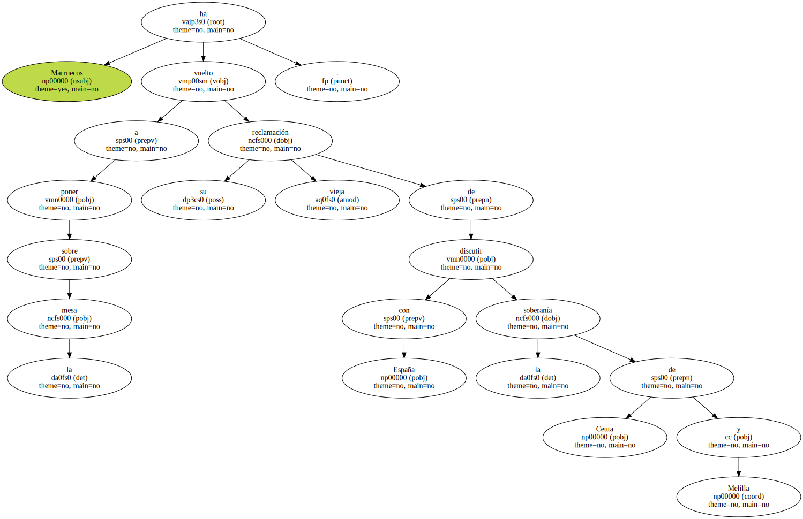
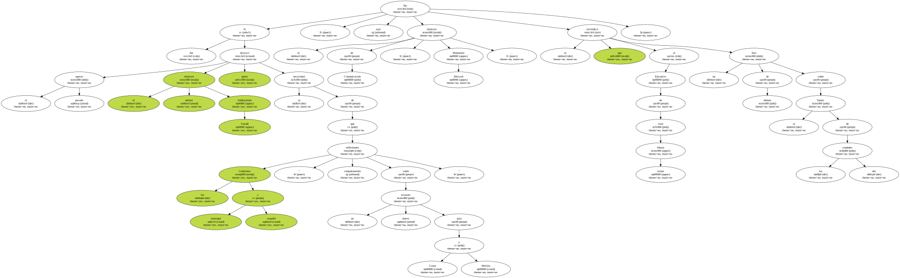
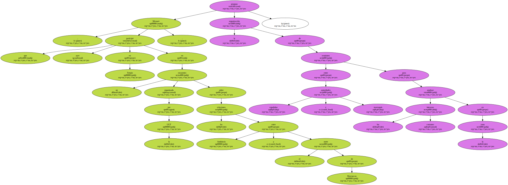
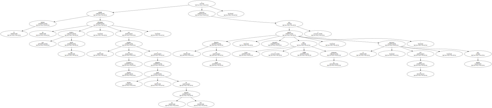
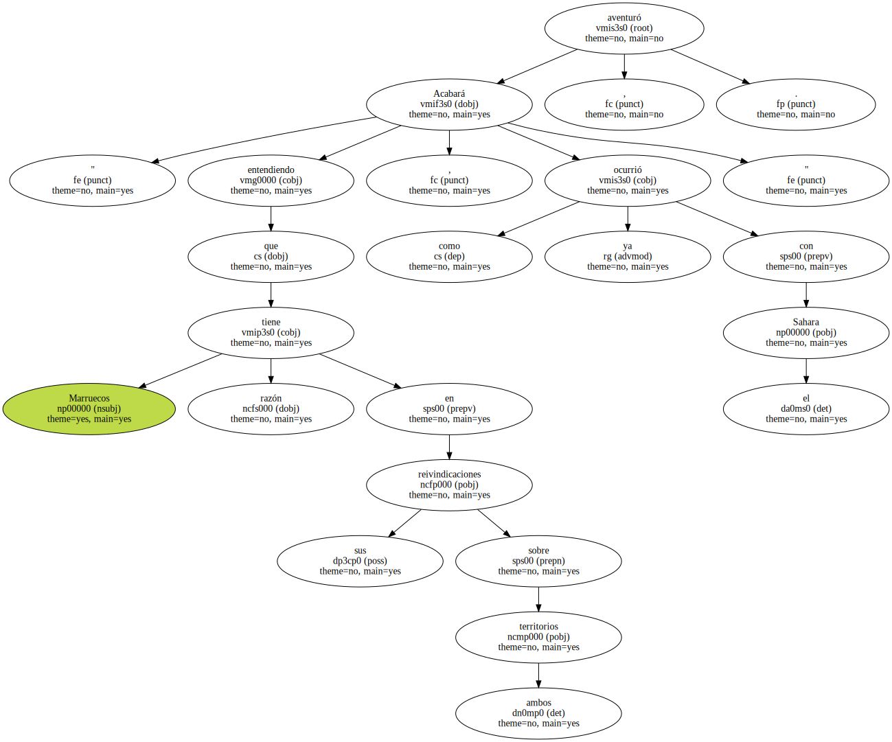
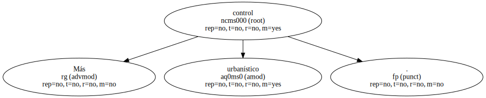
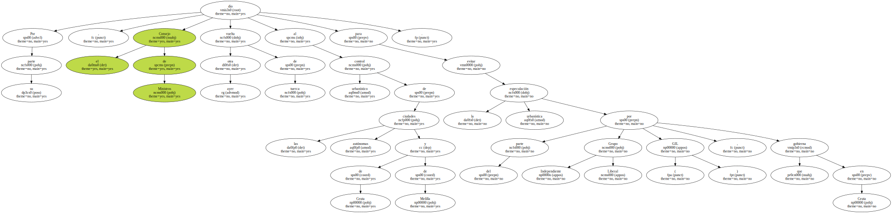
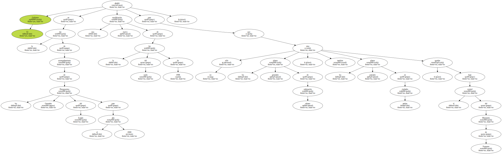
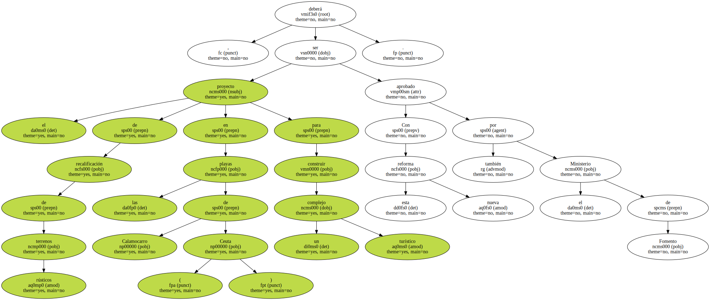

Marruecos ha vuelto a poner sobre la mesa su vieja reclamación de discutir con España la soberanía de Ceuta y Melilla.
Si el pasado agosto fue el primer ministro Abderramán Yusufi quien destacó la necesidad de que los Gobiernos marroquí y español reflexionen " conjuntamente sobre un nuevo estatuto para Ceuta y Melilla " , ayer fue el ministro de Comunicación , Mohamed Messari , el que reivindicó al Ejecutivo de José María Aznar un foro de debate sobre el futuro de las dos ciudades.
Messari , que ayer participó en Tetuán en un encuentro organizado por la UGT sobre las relaciones entre Andalucía y el norte de Marruecos , propuso la organización de reuniones entre autoridades españolas y marroquís para analizar los intereses comunes en la zona.
El ministro admitió las dificultades que encierra este asunto , por la negativa del Gobierno español a plantearse siquiera la cesión de las dos ciudades , y reconoció que el Ejecutivo de Aznar " seguirá pensando que Ceuta y Melilla le pertenecen , y el marroquí , por su parte , que también ".
A pesar de esto , el titular de Comunicación expresó su confianza en que España cederá.

" Acabará entendiendo que Marruecos tiene razón en sus reivindicaciones sobre ambos territorios , como ya ocurrió con el Sahara " , aventuró.
Más control urbanístico.
Por su parte , el Consejo de Ministros dio ayer otra vuelta de tuerca al control urbanístico de las ciudades autónomas de Ceuta y de Melilla para evitar la especulación urbanística por parte del Grupo Independiente Liberal ( GIL ) , que gobierna en Ceuta.
El Gobierno añadió en la ley de acompañamiento de los Presupuestos Generales del Estado para el año 2000 una nueva modificación de la ley del suelo de 1998 para que no sólo los planes generales de ordenación urbana , sino tambien los planes parciales en ambas ciudades , queden bajo el control del Ministerio de Fomento.
Con esta nueva reforma , el proyecto de recalificación de terrenos rústicos en las playas de Calamocarro ( Ceuta ) para construir un complejo turístico deberá ser aprobado también por el Ministerio de Fomento.
